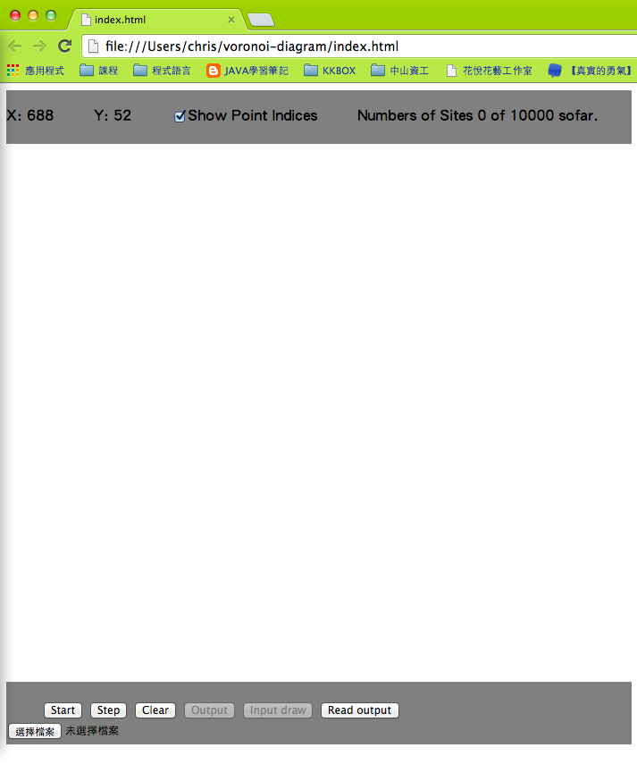

實作流程
首先，必須要先實做出各個功能的界面。因為網頁已經定義好許多物件的標籤，而又可以立即顯示，所以我選擇使用網頁的方式來呈現。
HTML5 提供了 Canvas 的標籤來在網頁上繪圖，但是原生的函式庫不好用。所以我選擇使用 KineticJS 來幫助我完成版面的規劃。把所有的物件都放到頁面上後，
可以再設定 CSS 來排版。如此就可以得到美美的 Layout 了。

再來，為了完成 divide-and-conquer 版本的 Voronoi Diagram。必須先完成一些 Base Case。在此我以 2點 Voronoi 以及 3點 Voronoi 當作 Base Case。
所謂的 Base Case，指的就是不擇手段也要將結果正確地執行出來。在這邊比較困難的地方在於如何消除不需要的線段，在此我參考 兩線段之交點 來判斷線段之間的交點，
並考慮一些判斷來消線。在三個點的 Voronoi 中，我分為三種情況來考慮，分別是直角，銳角，以及鈍角三角形。三種 case 所要消除的線段皆不太一樣。必須謹慎考慮。
完成了 Base Case 之後，接下來必須找尋 Convex Hull，來解決 Merge 的問題。 在這邊找 Convex Hull 的方式比較特別，我參考 Pamela Cutter 教授上課的 投影片。
利用外積的計算，來找出兩邊 Convex Hull 的上切點與下切點，然後再將彼此連起來，就可以 Merge Convex Hull 了。
最後，找出 Hyper Plane 來合併 Voronoi Diagram。這樣就可以得到正確的執行結果了。找 HP 必須有上切點，下切點以及每一個點的"鄰居"。在此我記錄了每一個點的
"順時針"以及"逆時針"的鄰居是哪些點，利用此資訊可以判斷被HP交到的下區塊是哪些頂點，然後就可以繼續往下尋找HP。

資料結構
Point:
x: 坐標x
y: 坐標y
clockwise: 順時針的鄰居
counter_clockwise: 逆時針的鄰居
Line:
points[]: 線段所組成的點
made_by[]: 由哪些點組成
convexlayer:儲存每一個 Convex Hull(包含 merge 前)
vorlayer: 儲存每一個 Voronoi Diagram(包含 merge 前)
bisectorlayer: 儲存所有中垂線
steplayer: 儲存每一步驟所要畫的所有點跟線
HPlayer: 儲存所有 Hyper Plane 的線段
L_up: 左 Voronoi 的上切點
L_down: 左 Voronoi 的下切點
R_up: 右 Voronoi 的上切點
R_down: 右 Voronoi 的下切點